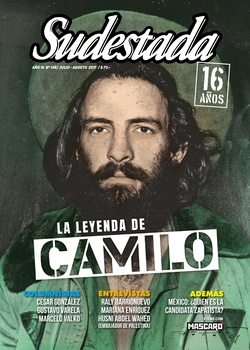

Buscar
"Lo fantástico es el terreno donde mejor me muevo"
Las texturas con las que trabaja Mariana Enríquez se advierten cercanas al mundo de lo fantástico, a un caminar por el filo del terror y del suspenso, a transformar lo cotidiano en escenario de relatos donde el miedo se hace latente y cercano. En esta entrevista con Sudestada, aprovechamos la ocasión de su reciente novela Éste es el mar, para invitarla a pensar sobre su propio estilo y para indagar en sus influencias, entre la literatura y el rock.
Edición N° 148
Julio-Agosto 2017
Revista bimensual
Comprar edición impresaSumario
- La leyenda de Camilo
- Buenos tiempos para equilibristas
- "A veces, uno busca con una intuición del corazón"
- Marichuy: "Enfrentar la guerra todos juntos"
- La imagen neoliberal
- "Lo fantástico es el terreno donde mejor me muevo"
- "La voluntad del pueblo palestino es inquebrantable"
- Un lugar donde la unión salva
- Batallas contra el olvido
- Tango y Estado
- "Me interesaba conocer cuáles eran sus sueños, cómo pensaba"
- Dostoievsky entre nosotros
- Ser fiel a la Recova
Compartir Articulo
No sólo se trata de adentrarse a un universo literario. Leer a Mariana Enríquez es otra cosa, es disponerse a transitar diferentes mundos culturales a partir de una voz única. Una voz que rompe con determinadas marcas de una generación cada vez más concentrada en la construcción de sus propias experiencias y que hasta, a veces, parece temerle a la imaginación. Una voz que despierta intereses que atraviesan fronteras a raíz de una escritura que puede llegar a retratar escenas de la vida cotidiana, secuencias que por lo bajo sufren el encarcelamiento de lo "normal". Como si se tratara de una letra de rock o de una historia que alguien puede contar en una sobremesa, en la cadencia de su ritmo, en la confirmación de una soledad que no siempre es mala.
"O acaso no se daba cuenta cuando nos sentábamos sobre sus rodillas apoyando el culo con mucha fuerza, y tratando de manotearle la pija con la mano, como en un descuido. O cuando nos reíamos cerca de su boca, mostrándole la lengua. ¿Por qué no nos tirábamos encima de él y listo? Porque nos pasaba a todas, no era solamente la obsesión de Natalia: queríamos que Diego nos eligiera. Queríamos estar con él todavía mojadas del agua fría de la tosquera, cogiendo una tras otra…", anota Enríquez en su relato "La virgen de la tosquera", que forma parte de Los peligros de fumar en la cama, un cuento con una poética que transforma la oscuridad de unas niñas en una historia que se afirma en el amor. Y eso hace Enríquez: cuenta historias. Esas historias que a cualquiera les daría pudor, ella logra potenciarlas con una sexualidad que lleva hasta el límite, nombrando todo sin metáforas huecas, convirtiendo el miedo y el llanto en algo que le cabe a todos los géneros.
Editora del suplemento cultural Radar de Página/12, en muchas oportunidades Enríquez escribe sobre músicos, series y escritores que han resultado reveladores de un estilo disruptivo. Con esa dosis de desenfreno que utiliza para todo, también publica libros, entre los se encuentran sus novelas Bajar es lo peor (1995) y Cómo desaparecer completamente (2004), sus libros de relatos, Los peligros de fumar en la cama (2009), Cuando hablábamos con los muertos (2013), Las cosas que perdimos en el fuego (2016), las crónicas sobre cementerios de Alguien camina sobre tu tumba (2013) o la reciente nouvelle Éste es el mar.
–¿En qué lugar ubicarías a la literatura con respecto a tu oficio de escribir, ya que hace rato venís incursionando en el periodismo? ¿Son mundos que se conectan?
–La literatura siempre vino antes que el periodismo. De hecho, publiqué mi primer libro antes de empezar a trabajar como periodista, y me contrataron por eso. Me gustaba el periodismo, sobre todo sentí que tenía facilidad para escribir, pero nunca me interesó otra cosa más que la parte gráfica de ese trabajo. El periodismo, entonces, siempre fue un trabajo que me gustaba mucho, que disfruto y lo fui haciendo de diferentes maneras. Lo empecé haciendo, como en general se arranca, en Sociedad, en Política y después me fui acercando de a poco a lo que quería. En un momento, mucho periodismo de rock, y después cultural, pero eso nunca dejó de ser trabajo. En paralelo también escribía, lo que pasa es que ahora, estos dos últimos libros, tuvieron una visibilidad que no había tenido ningún otro hasta el momento.
–¿En qué momento te sentiste escritora por primera vez?
–A partir del segundo libro, me parece. En el primero era tan pendeja que no tenía tanta idea del ambiente… aunque ahora tampoco lo tengo tanto, pero en ese momento no entendía nada. Vivía en La Plata, estaba estudiando, metida en otro mundo. Entre la primera novela y la segunda hay diez años de diferencia porque no se me ocurría mucho por dónde seguir. En el medio de todo eso escribí una que descarté porque no estaba bien, pero fue un aprendizaje: aprendí a escribir una novela sola y a darme cuenta de que no estaba buena. Cuando publiqué la segunda, que la escribí entre 2001 y 2003, ahí dije: "Bueno, esto es lo que quiero hacer". A partir de entonces hubo una continuidad de publicaciones y empecé con cuentos en revistas...
(La nota completa en la edición gráfica de Sudestada... ¿Por qué publicamos apenas un fragmento de cada artículo? Porque la subsistencia de Sudestada depende en un 100 por ciento de la venta y de la confianza con sus lectores, no recibimos subsidios ni pauta alguna, de modo que la venta directa garantiza que nuestra publicación siga en las calles. Gracias por comprender)
Comentarios
Gustavo Grazioli
Articulos más vistos


LIBRERÍA SUDESTADA

Colección infantil

Distribuidora de Libros

Suscripción

Sudestada en URUGUAY

Otros articulos de esta edición
 Musiqueros. Raly Barrionuevo
Musiqueros. Raly Barrionuevo
"A veces, uno busca con una intuición del corazón"
No tiene apuro en esta entrevista con Sudestada. Por ese motivo, mientras comparte un mate y recorre el presente de ...
La imagen neoliberal
No es que el neoliberalismo en sus formas de comunicar usa más la imagen que el discurso. Más bien, su ...
 Antihéroes. María Claudia Falcone
Antihéroes. María Claudia Falcone
"Me interesaba conocer cuáles eran sus sueños, cómo pensaba"
Lejos del mito ingenuo y vacío de sentido que se intentó construir alrededor de María Claudia Falcone y de sus ...
 Nota de tapa
Nota de tapa
La leyenda de Camilo
Cada 28 de octubre, una multitud de niños y niñas camina hasta la orilla del malecón habanero y arroja una ...
 Editorial
Editorial
Buenos tiempos para equilibristas
Corren tiempos modernos, dicen los que saben. Esos, los que están de vuelta de todo. Buenos tiempos para los que ...
 Teatro
Teatro
Dostoievsky entre nosotros
Una obra de teatro también puede ser un repaso por los personajes y conflictos de un autor emblemático como Dostoievsky. ...